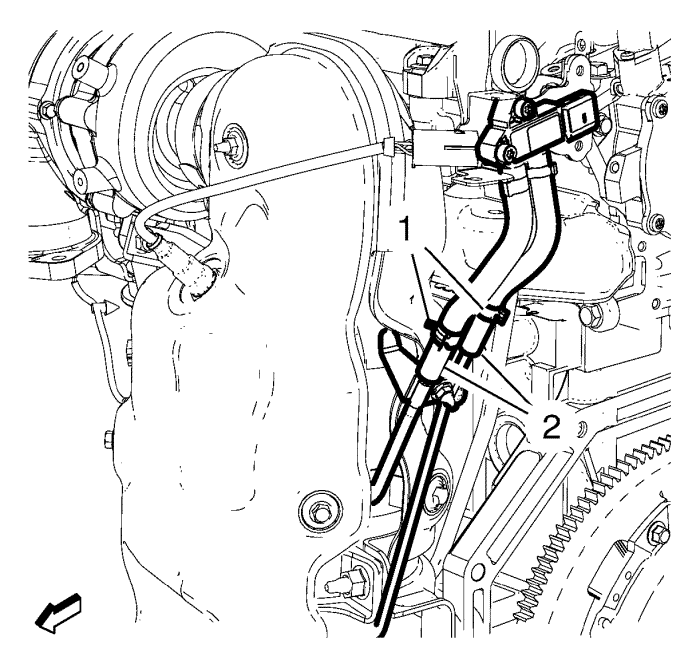

Sustitución del filtro de partículas del escape
Procedimiento de desmontaje
Advertencia: Consulte Advertencia de servicio del sistema de escape en la sección Prólogo.
Advertencia: Consulte Advertencia sobre guantes y gafas protectoras en la sección Prólogo.
Atención: No doble el tubo de escape flexible más de 10 grados en cualquier dirección. Doblar más de 10 grados o retorcer en un rango de ±0,5 grados dañará el desacoplador de escape flexible.
- Desconecte el cable negativo de la batería. Consultar Desconexión y conexión del cable negativo de la batería .
- Desmontar la pantalla de protección del motor. Consultar Sustitución del protector del motor .
- Desmonte la sonda Lambda calentada. Consultar Sustitución del sensor de oxígeno calentado .
- Desmonte el sensor de temperatura de los gases de escape - posición 2. Consulte Sustitución del sensor de temperatura del escape de la posición 2 .
- Extraiga la pantalla térmica del turbocompresor. Consultar Sustitución de la pantalla térmica del turbocompresor .
- Retire la pantalla térmica del filtro de partículas de escape - delantera. Consultar Sustitución de la pantalla térmica del filtro de partículas de escape - Delantera .
- Desemborne la posición 3 del enchufe del mazo de cables del sensor de temperatura de escape. Retire el clip del tubo flexible de depresión de control del aire de carga.

- Retire las dos abrazaderas del tubo flexible del sensor del diferencial de presión de gases de escape (1).
- Retire los dos tubos flexibles del sensor del diferencial de presión de escape (2) de las tuberías del filtro de partículas diésel.
- Retire los 2 tornillos del soporte del sensor de presión de gases de escape.
- Elevar el vehículo y soportarlo de manera segura. Consultar Elevación y soporte en alto del vehículo .
- Desmonte el aislante del compartimento delantero. Consultar Sustitución del aislamiento del compartimento delantero .
- Retire el tubo de escape delantero de la brida del filtro de partículas de escape. Consultar
Sustitución del tubo de escape delantero : 2.0L Diésel LNP → LDE,LLU,LXT,LXV,L2W,2H0 .

- Retire la tuerca (5) y los 3 tornillos del filtro de partículas diésel (4) de los soportes del filtro de partículas diésel.
- Bajar el vehículo.
- Retire la abrazadera del filtro de partículas de escape (1).
- Retire el filtro de partículas de escape (3) y la junta (2).
- Retire la posición 3 del sensor de temperatura de escape. Consulte Sustitución del sensor de temperatura de escape - Posición 3.
- Retire la pantalla térmica del filtro de partículas de escape - trasera. Consultar Sustitución de la pantalla térmica del filtro de partículas de escape - Trasera .
Procedimiento de montaje
- Monte la pantalla térmica del filtro de partículas de escape - trasera. Consultar Sustitución de la pantalla térmica del filtro de partículas de escape - Trasera .
- Monte la posición 3 del sensor de temperatura de escape. Consulte Sustitución del sensor de temperatura de escape - Posición 3.
- Monte el filtro de partículas de escape (3) con la abrazadera del filtro de partículas diésel (1) y una junta NUEVA (2).
- Monte previamente la abrazadera del filtro de partículas de escape.
Precaución:Consulte Precaución con las fijaciones en la sección Prólogo.
- Monte los 2 tornillos del filtro de partículas de escape superior (4). Apriete los 2 tornillos del filtro de partículas de escape superior a 22 N·m (16 lib. pie).
- Elevar el vehículo
- Monte los tornillos del filtro de partículas de escape inferiores (4) y apriételos a 22 N·m (16 lib. pie).
- Monte la tuerca del filtro de partículas de escape (5) y apriétela a 28 N·m (21 lib. pie).
- Monte el tubo de escape delantero en la brida del filtro de partículas de escape. Consultar
Sustitución del tubo de escape delantero : 2.0L Diésel LNP → LDE,LLU,LXT,LXV,L2W,2H0 .
- Monte el aislante del compartimento delantero. Consultar Sustitución del aislamiento del compartimento delantero .
- Bajar el vehículo.
- Apriete la abrazadera del filtro de partículas de escape a 10 N·m (84 lib. pulg.).
- Monte los 2 tornillos del soporte del sensor de presión de escape y apriételos a 10 N·m (89 lib. pulg.).
- Monte los dos tubos flexibles del sensor del diferencial de presión de escape (2) en las tuberías del filtro de partículas de escape.
- Monte las dos abrazaderas del tubo flexible del sensor del diferencial de presión de gases de escape (1).
- Emborne la posición 3 del enchufe del mazo de cables del sensor de temperatura de escape. Monte el clip en el tubo flexible de depresión de control del aire de carga.
- Monte el sensor de temperatura de los gases de escape - posición 2. Consulte Sustitución del sensor de temperatura del escape de la posición 2 .
- Monte la pantalla térmica del filtro de partículas de escape - delantera. Consultar Sustitución de la pantalla térmica del filtro de partículas de escape - Delantera .
- Monte la sonda Lambda calentada. Consultar Sustitución del sensor de oxígeno calentado .
- Monte la pantalla térmica del turbocompresor. Consultar Sustitución de la pantalla térmica del turbocompresor .
- Monte el protector del motor. Consultar Sustitución del protector del motor .
- Conecte el cable negativo de la batería. Consultar Desconexión y conexión del cable negativo de la batería .
| © Copyright Chevrolet. All rights reserved |